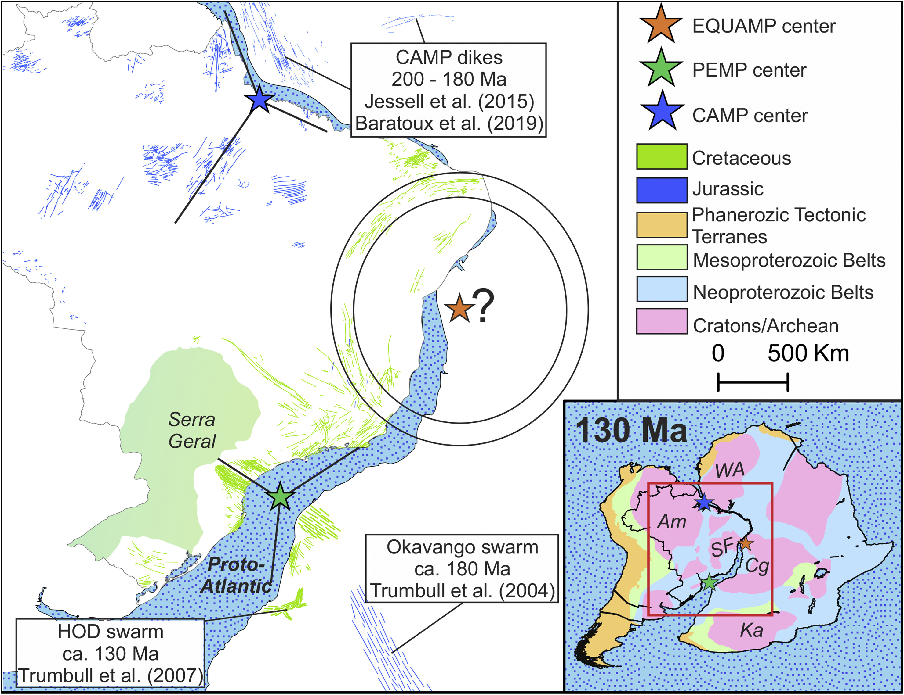

Updated map of mafic dike swarms of Brazil base on airborne geophysical data

Resumo em Português
A identificação de enxames de diques máficos e Grandes Províncias Ígneas (LIPs) é de vital importância na história geológica, pois fornece informações sobre geodinâmica, geoquímica do manto e paleomagnetismo. Esses dados fornecem informações-chave para reconstruções paleogeográficas com auxílio de correspondências de código de barras e idades radiométricas precisas. Considerando tais aspectos, o escudo Pré-Cambriano brasileiro pode ser utilizado como caso para refinar a cartografia da atividade intraplaca relevante (diques, soleiras, basaltos de inundação) no espaço e no tempo. Este trabalho apresenta um mapa atualizado de enxames de diques máficos brasileiros produzido a partir de mapas geofísicos aéreos (Série 1000 – Serviço Geológico do Brasil). Anomalias lineares e fortes encontradas em mapas aeromagnéticos utilizando a Primeira Derivada Vertical do Campo Magnético e a Amplitude do Sinal Analítico foram mapeadas em plataforma SIG. Os dados obtidos foram comparados a mapas radiométricos ternários e mapas geológicos para excluir aqueles que não correspondem a diques máficos. As estruturas remanescentes — consideradas como representando diques máficos — foram classificadas com base em dados compilados da literatura. O mapa atualizado exibe mais de 5.000 elementos, incluindo diques e suítes magmáticas, dos quais cerca de 75% foram identificados geologicamente e divididos em 60 enxames de diques e 10 suítes e/ou unidades ígneas. Os diques foram agrupados em dezesseis episódios extensionais do Arqueano ao Cenozoico, embora alguns estejam relacionados a domínios de extensão/transtensão em zonas compressivas regionais afins a contextos orogênicos. Os registros mais frequentes referem-se ao Proterozoico, representando episódios intraplaca, alguns deles consistentes com LIPs. O conjunto de dados também inclui um extenso registro de idade Mesozoica, correspondente aos principais eventos de LIP relacionados à abertura do Oceano Atlântico e à fragmentação do Gondwana.